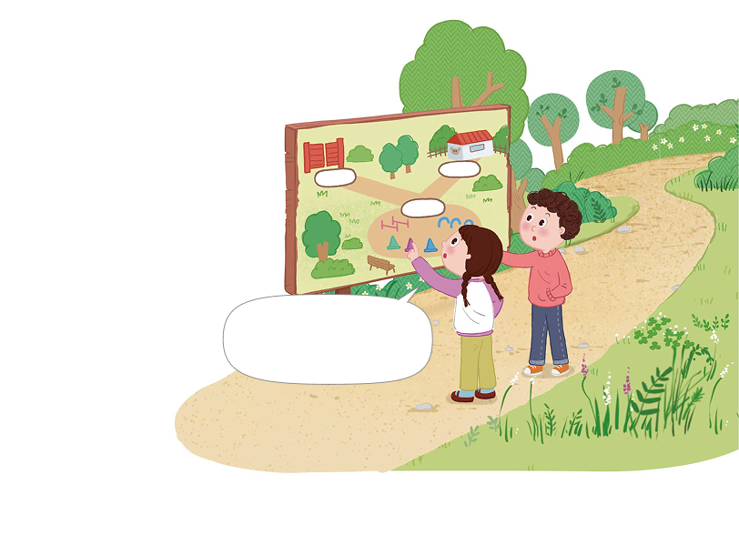

유기견 보호 센터 입구에서 운동장까지의 거리는
1
2
㎞이고, 운동장에서 상담소까지의 거리는
1
3
㎞입니다. 입구에서
운동장을 지나 상담소까지의 거리는 몇 ㎞인지 알아봅시다.
입구
상담소
운동장
입구에서 운동장을 지나
상담소까지의 거리는 몇 ㎞인지
어떻게 구할 수 있을까?

영상을 보고 유기견 보호 센터 입구에서 운동장을 지나 상담소까지의 거리를 어떻게 구할 수 있을지 이야기해 보세요.
입구에서 운동장까지의 거리와 운동장에서 상담소까지의 거리를 더하면 될 것 같습니다.
입력타입토글
리셋
제출